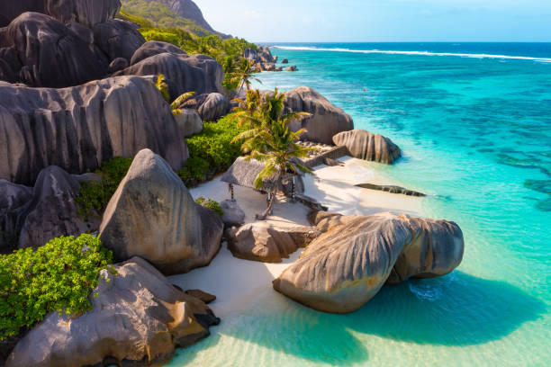

Seychelles 🏝️

🏝️ Seychelles: Giganti di Granito e Natura Incontaminata: Le Seychelles, nell'Oceano Indiano, si distinguono per le loro **imponenti formazioni rocciose di granito** che creano un contrasto spettacolare con le spiagge di sabbia bianca e le acque turchesi. Questo arcipelago offre una natura incontaminata, con la possibilità di avvistare tartarughe giganti e la rarissima palma Coco de Mer nella Vallée de Mai. È una destinazione che garantisce tranquillità, eleganza discreta e una bellezza paesaggistica di rara unicità e selvaggia.
- 🎾 Attività: trekking in riserve naturali, snorkeling, pesca d'altura
- 🍳 Cibo tipico: curry di pesce, chutney di mango, frutti di mare
- ⭐ Luoghi iconici: Anse Source d'Argent, Vallée de Mai, isola di La Digue